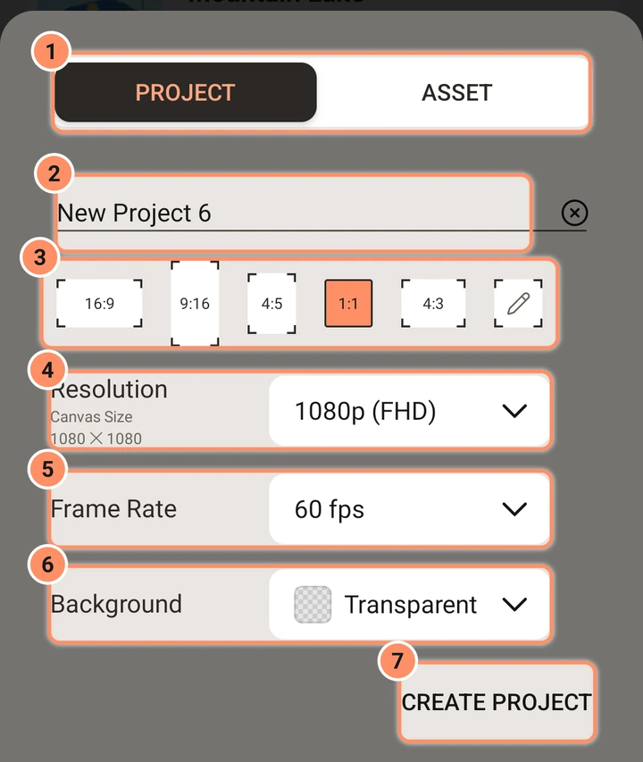

Creare un progetto
Ogni impostazione del foglio nuovo progetto.
In questa pagina
Tocca il + rotondo in fondo alla schermata iniziale. Un foglio scorre dal basso. Si apre con i valori che hai usato l'ultima volta (forma, risoluzione, frequenza fotogrammi e sfondo; il nome è sempre nuovo). Tocca Indietro per chiuderlo senza creare nulla.

Progetto o risorsa
L'interruttore in alto ha due scelte, PROGETTO (predefinito) e RISORSA. Una risorsa è un elemento riutilizzabile con sfondo trasparente: la sua impostazione dello sfondo è bloccata su Trasparente. Vedi Risorse, modelli e preset.
Nome
Il nome parte come "Nuovo progetto 1", "Nuovo progetto 2" e così via (le risorse partono come "Nuova risorsa"). Tocca la X nel campo per cancellarlo. Un nome vuoto torna a quello predefinito.
Forma dell'immagine (proporzioni)
Pulsanti per 16:9, 9:16, 4:5, 1:1 e 4:3, e un pulsante a forma di matita per Proporzioni personalizzate. Il predefinito è 1:1. Scegli 9:16 per video da telefono, 16:9 per un video in orizzontale.
Risoluzione
La riga Risoluzione mostra la dimensione della tela, per esempio 1920 x 1080. Per le cinque forme è un elenco del lato corto:
| Scelta | Lato corto |
|---|---|
| 2160p (4k) | 2160 |
| 1440p (QHD) | 1440 |
| 1080p (FHD), il predefinito | 1080 |
| 720p (HD) | 720 |
| 540p (SD), 360p, 270p, 180p | come indicato |
Il lato lungo segue la forma. Un progetto 16:9 a 1080p è 1920 x 1080, un progetto 4:5 è 1080 x 1350 e un progetto 4:3 è 1440 x 1080.
Con Proporzioni personalizzate, l'elenco diventa due campi numerici per larghezza e altezza, con un pulsante rotondo Collega tra di essi. Quando Collega è attivo, cambiare un lato mantiene la forma che i due campi avevano quando hai attivato Collega. Ogni lato può andare da 32 a 4096 pixel; l'app corregge il valore quando esci dal campo.
Per conservare una dimensione per dopo, tocca + Salva dimensioni sotto i campi e dagli un nome (per esempio "Banner"). Le dimensioni salvate compaiono come pulsanti accanto: toccane una per riempire larghezza e altezza. Tieni premuta una dimensione salvata (clic destro su un computer) per rinominarla o eliminarla. Nell'editor, le impostazioni del progetto offrono le stesse dimensioni salvate quando scegli un rapporto personalizzato.
Una tela più grande è più nitida, ma richiede più memoria e più tempo per esportare. 1080p è una buona scelta per la maggior parte dei progetti. Puoi cambiare la risoluzione in seguito nelle impostazioni del progetto nell'editor, che non ridimensiona i tuoi livelli.
Frequenza fotogrammi
Scegli 12, 15, 18, 20, 24, 25, 30, 48, 50, 60, 90 o 120 fotogrammi al secondo. Il predefinito è 60. Usa 24 o 30 per un aspetto cinematografico e file più piccoli, e 60 per un movimento veloce e fluido. 90 e 120 servono per un movimento molto fluido su schermi ad alta frequenza; non tutti i telefoni possono esportare un video così veloce, e la schermata di esportazione ti dice quando il tuo non può. Questo imposta quante volte al secondo l'editor e l'esportazione disegnano un'immagine. Le clip video mantengono la loro frequenza fotogrammi; vedi l'opzione di interpolazione fotogrammi nella pagina Esporta.
Sfondo
Il colore dietro i tuoi livelli: Nerissimo, Bianco, Grigio chiaro, Verde, Blu o Trasparente (mostrato con una scacchiera). Una nuova installazione parte con Trasparente. Le aree trasparenti di un video esportato escono nere; le esportazioni GIF e di immagini ti permettono di scegliere cosa diventano le aree trasparenti, e il PNG le mantiene.
Pulsanti in basso
- CREA PROGETTO (CREA RISORSA per una risorsa) crea il progetto e apre l'editor su di esso.
- La X sotto di esso chiude il foglio.
Se non c'è abbastanza spazio, l'app lo dice e non crea il progetto.